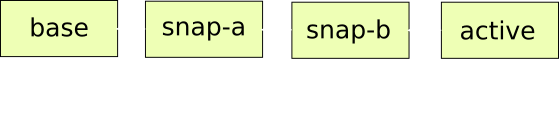

Block Jobs:
Current Status, Upcoming Challenges
Jeff Cody | jcody@redhat.comSeattle, WA
August 21, 2015
Presentation available at: http://qemu.rocks/jtc-kvm2015
Block Jobs:
Current Status, Upcoming Challenges
Jeff Cody | jcody@redhat.comSeattle, WA
August 21, 2015
Presentation available at: http://qemu.rocks/jtc-kvm2015
What are Block Jobs?
- Initiated by QMP/HMP Command
- e.g.:
{ "execute": "block-commit",
"arguments": { "device": "virtio0" } }
-
-
-
- Executed via coroutine
- Asynchronous
-
-
- Perform I/O on images(s)
- Initiated by QMP/HMP Command
- e.g.:
{ "execute": "block-commit",
"arguments": { "device": "virtio0" } } - Executed via coroutine
- Asynchronous
- Perform I/O on images(s)
- e.g.:
Current Status (v2.2.0..)
- Four Block Jobs
- Backup
- Point-in-time drive backup
- Backup
- Stream
- Move data in chain into overlays
- Commit
- Move data from overlays into backing files
- Mirror
- Mirror drive's write to a new destination
Backup
- Changes in qemu.git/master
- blockdev-backup QMP command added
- (Fam Zheng), v2.3.0+
- Incremental sync mode added
- (John Snow), v2.4.0+
- Incremental backups (see John's presentation!)
- http://wiki.qemu.org/Features/IncrementalBackup
- blockdev-backup QMP command added
- Patches on list
- COLO support - COarse Grain LOck Stepping
- (Wen Congyang)
- http://wiki.qemu.org/Features/COLO
- COLO support - COarse Grain LOck Stepping
Stream
- Changes in qemu.git/master
- Minor bug fixes / cleanup
- Patches on list
- Intermediate streaming
- (Alberto Garcia)
- Intermediate streaming

Stream
- Changes in qemu.git/master
- Minor bug fixes / cleanup
- Patches on list
- Intermediate streaming
- (Alberto Garcia)
- Intermediate streaming
Stream
- Changes in qemu.git/master
- Minor bug fixes / cleanup
- Patches on list
- Intermediate streaming
- (Alberto Garcia)
- Intermediate streaming
Stream
- Changes in qemu.git/master
- Minor bug fixes / cleanup
- Patches on list
- Intermediate streaming
- (Alberto Garcia)
- Intermediate streaming
Stream
- Changes in qemu.git/master
- Minor bug fixes / cleanup
- Patches on list
- Intermediate streaming
- (Alberto Garcia)
- Intermediate streaming
Stream
- Changes in qemu.git/master
- Minor bug fixes / cleanup
- Patches on list
- Intermediate streaming
- (Alberto Garcia)
- Intermediate streaming
Commit
- Changes in qemu.git/master
- Minor bug fixes / cleanup
Mirror
- Changes in qemu.git/master
- Bitmap spoiling fix
- (Vladimir Sementsov-Ogievskiy), 2.2.0+
- Bitmap scanning speedup
- (Fam Zheng), 2.4.0+
- Coroutine re-entrancy fix
- (Kevin Wolf), 2.5.0+
- Minor bug fixes / cleanup
- Bitmap spoiling fix
Block Job Infrastructure
- Changes in qemu.git/master
- Nested Pause
- (Fam Zheng)
- v2.4.0+
- Nested Pause
Future Challenges / Improvements
(v2.5.0+)
- Op Blockers
- Finer granularity - more parallelism
- Safer blocking
- Safe(r) commit
-
QMP command definition
- JSON file (qapi/*.json)
- qmp_commands.hx
-
Command handler
- blockdev.c
-
Block Job coroutine
- e.g. block/stream.c
- Schedule job completion / cleanup
- block-null
- Simple block job
- Reads all sectors in BDS
- Coroutine loop
- Cooperative - must yield
- Sleep time derived from throttle speed
block_job_sleep_ns()
- Perform I/O
- e.g., loop & read sectors
- Cooperative - must yield
Safe(r) Commit
Sectors in "active" differ from those in "base"
Safe(r) Commit
Normal commit: push sectors into "base"
Safe(r) Commit
Images "snap-a" and "snap-b" now invalid
Safe(r) Commit
Let's try to be safer
Safe(r) Commit
First, stream affected sectors to overlay image
Safe(r) Commit
Now commit sectors from "active"
Safe(r) Commit
All backing files in the chain are now still valid
Structure of a Block Job
Key Components
A sample Block Job:
Code available at:
http://qemu.rocks/kvm2015/git
QMP Command Definition
{ 'enum': 'BlockJobType',
'data': ['commit', 'stream', 'mirror', 'backup', 'null'] }
{ 'command': 'block-null',
'data': { 'device': 'str', '*speed': 'int' } }
QMP Handler
void qmp_block_null(const char *device,
bool has_speed, int64_t speed,
Error **errp)
{
BlockBackend *blk;
BlockDriverState *bs;
AioContext *aio_context;
Error *local_err = NULL;
if (!has_speed) {
speed = 0;
}
blk = blk_by_name(device);
if (!blk) {
error_set(errp, ERROR_CLASS_DEVICE_NOT_FOUND,
"device '%s' not found", device);
return;
}
bs = blk_bs(blk);
aio_context = bdrv_get_aio_context(bs);
aio_context_acquire(aio_context);
if (local_err != NULL) {
error_propagate(errp, local_err);
goto out;
}
null_start(bs, speed, block_job_cb, bs, &local_err);
out:
aio_context_release(aio_context);
}
Block Job Coroutine
Questions?
THE END
Jeff Cody | Red Hat, Inc.
Presentation available at: http://qemu.rocks/jtc-kvm2015
Videos from wedistill.io: Robert Cole (title slide), Tyler Finck (end slide)
Videos licensed under Creative Commons Zero License